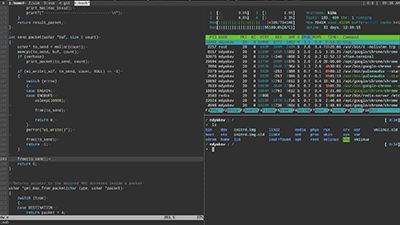
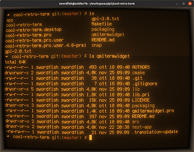
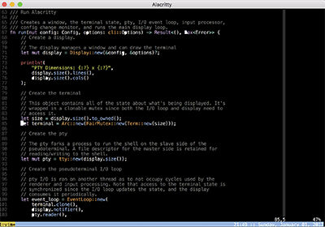

Нестандартным эмуляторы терминалов

Termite
Минималистичный терминал, поддерживающий цветовую настройку.

Cool-retro-term
Необычный эмулятор терминала, с настройками внешнего вида от ЭЛТ экранов до футуристичных.

Alacritty
Кросс-платформенный эмулятор терминала, использующий графическое ускорение, за счёт чего достигается высокая скорость работы.